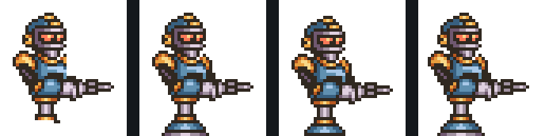
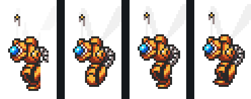
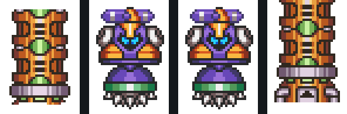
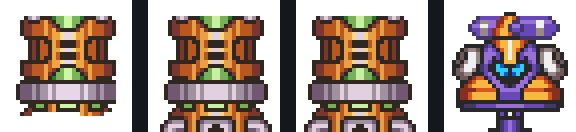
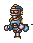
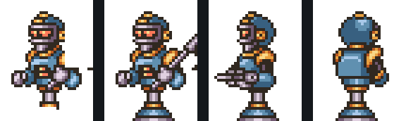
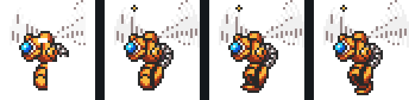

Update · Session 32 (2026-04-18):
candidate → slot-trace bindings complete for three of the four
STRONG candidates, and the full pipeline has been integrated into
Slot-to-candidate map (post_dash_recon slots.csv):
sprites_ref_builder.py so every new enemy KB entry now
carries an OAM-composed atlas + per-state Jaccard verdict by default.
Slot-to-candidate map (post_dash_recon slots.csv):
- slot 3 (b12=0x51) = candidate A —
cp_enemy_slot3/, state 2 verified J=0.7324 vsenemies_31593 - slot 5 (b12=0x0B) = candidate B —
cp_enemy_slot5/, state 4 verified J=0.7324 vsenemies_31593 - slot 7 (b12=0x19) = candidate C —
cp_enemy_slot7/, states 2 + 4 verified (J=0.768 / 0.748) vsenemies_31592; state 6 death animation blocked on screenshot cadence - candidate D is unbound — D sits at f1020 pal 7 (162, 108, 33×33), but neither pal-7 slot (3 or 5) lives at those coordinates. Likely a 4th enemy that lifecycles within the capture window without claiming a persistent slot, or an animation variant the S31 heuristic split off; needs longer / fresh recon.
Pipeline. For every recon frame, parse the SNES OAM
table (128 entries, palette row 0..7 per entry). Skip pal 2 (HUD)
and the player-X palette (positional filter: skip any cluster
whose bbox sits at x≤40, y≤110). For each remaining palette
row, union the on-screen OAM bboxes into a mask, intersect with the
pal-N CGRAM color set, and cross-correlate the resulting silhouette
against all four canonical enemy sheets from
The Spriters Resource.
Verdicts by Jaccard: PERFECT ≥ 0.99, STRONG ≥ 0.90, WEAK 0.70–0.90.
Candidates
Four frames from the post-dash recon sampled (f0840, f0960, f1020, f1080). Enemies only scroll into view from ~f0840 onward as X dashes forward. Six distinct silhouettes across pal 6 and pal 7. Zero PERFECT matches (unlike LO's 1.000 on the green frog) because CP enemy palettes share outline colors with snow/ice BG tiles, which shrinks the color-refined silhouette slightly. Ranking by Jaccard:
Candidate B — f0960 pal 7 (40×43) STRONG 0.866
Right-side enemy at screen-x 215.

- palette row
- 7
- on-screen bbox
- 40×43 @ (215, 98)
- best match
enemies_31593.png@ (x=250, y=50)- silhouette Jaccard
- 0.866, orientation normal
Candidate C — f1080 pal 6 (28×49) STRONG 0.844
Tall mid-screen enemy, upper area.

- palette row
- 6
- on-screen bbox
- 28×49 @ (133, 36)
- best match
enemies_31592.png@ (x=106, y=0)- silhouette Jaccard
- 0.844, orientation normal
Candidate A — f0960 pal 7 (34×49) STRONG 0.819
Taller pal-7 silhouette, upper-right of screen.

- palette row
- 7
- on-screen bbox
- 34×49 @ (181, 92)
- best match
enemies_31592.png@ (x=305, y=898)- silhouette Jaccard
- 0.819, orientation normal
Candidate D — f1020 pal 7 (33×33) STRONG 0.817
Compact ground-level enemy.

- palette row
- 7
- on-screen bbox
- 33×33 @ (162, 108)
- best match
enemies_31593.png@ (x=53, y=4)- silhouette Jaccard
- 0.817, orientation normal
Candidate E — f1020 pal 7 (33×43) WEAK 0.781
Likely same enemy as B at a different animation frame — silhouette differs enough to drop below STRONG.


- palette row
- 7
- on-screen bbox
- 33×43 @ (193, 98)
- best match
enemies_31593.png@ (x=196, y=0)- silhouette Jaccard
- 0.781, orientation normal
Candidate F — f1020 pal 6 (40×42) WEAK 0.768
Pal-6 enemy — probably the same type as C in a different pose; both land on sheet 31592 within 50px of each other.

- palette row
- 6
- on-screen bbox
- 40×42 @ (203, 42)
- best match
enemies_31592.png@ (x=51, y=4)- silhouette Jaccard
- 0.768, orientation normal
Takeaways for the pipeline
-
CP runs the LO pipeline unchanged. Same
extract_enemy_from_oam.py+sprite_reference_matcher.pyscripts, different stage dir, six candidates surfaced with four STRONG verdicts. That's the generalization signal we needed. - No PERFECT hits on CP. LO's frog scored 1.000 because its palette uses only solid fills (no half-tone outlines shared with BG). CP enemies use darker outline colors that the stage BG tiles also use, so CGRAM-refinement drops a thin rim of pixels. A future enhancement: union CGRAM colors across the first few frames of the enemy's lifetime (palette animation smooths the silhouette out).
- Pal 6 shows up here, not in LO. CP uses more OBJ palette rows than LO did. The pipeline auto-discovered this by sweeping all rows; no hardcoding needed.
-
X-filter is portable. The
--reject-player-slotsheuristic (skip any cluster whose bbox sits at x≤40, y≤110) worked on both stages without tuning.
Canonical reference sheets
Click to open full-size.

Enemies 1 · sheet 31592 — candidates A, C, F

Enemies 2 · sheet 31593 — candidates B, D, E

Enemies 3 · sheet 31594

Enemies 4 · sheet 31595